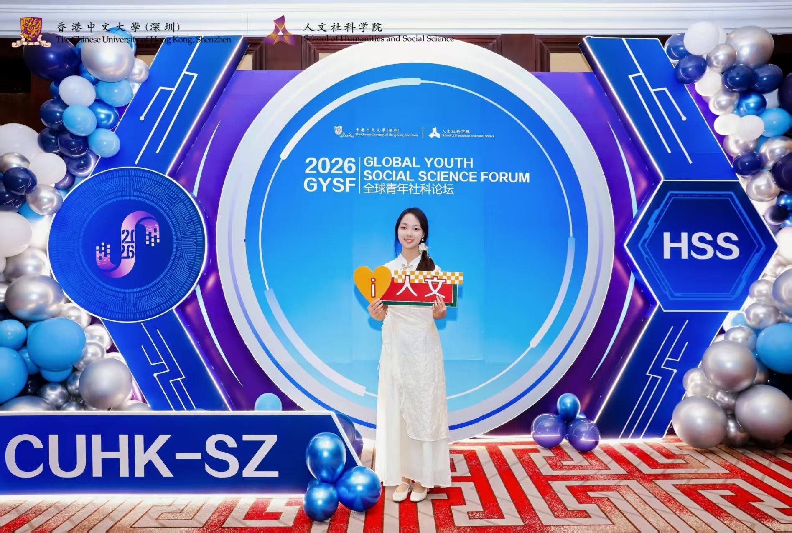

关于我
广东外语外贸大学国际政治专业排名第一（GPA 3.96/4.0，国家奖学金获得者），现就职于网易有道政府事务部，聚焦AI政策研究、科技合规与国际传播。拥有国际组织、财经媒体、公共政策部门多段实践经验，擅长政策分析、双语内容创作与跨文化项目协调。
Selected Work
跟踪国家及省级AI政策框架，开展政策影响评估为企业AI产品合规提供支撑；牵头撰写有道AI耳机、数字产业基地"AI+"国家级项目申报方案，整合知识产权、专利与技术资质；负责广州、杭州两地合规风险监测与监管投诉处理，保障业务合规运行。
查看详情负责第七届广州奖国际会议国内外全媒体矩阵运营，撰写6篇中英双语新闻稿，对接全球媒体与多边机构，推动中国城市治理经验国际传播，
查看详情合作撰写《21世纪经济报道》头版分析报道，策划"泰国街巷风情"系列视频内容，开展100+位东南亚KOL传播研究，搭建70人国际学生交流社群。
查看详情四个研究与创业子项目：中山大学中美青年对话东南亚项目、港中大（深圳）全球青年社科论坛、剑桥大学全球正义与金融危机研究，以及“青青子勤，守艺匠心”国家级大学生创业项目。
查看详情担任校团委副书记期间，统筹管理全校100+学生组织，负责活动策划、宣传内容生产、社会实践组织，主导/参与多场大型校园活动、三下乡实践项目，产出海报、推文、视频等多类宣传作品，锻炼了大型活动统筹与跨部门协调能力。
查看详情Experience
网易有道
广州国际城市创新奖秘书处
工业和信息化部电子第五研究所（CEPREI）
南方财经全媒体集团
Skills
证据：网易有道AI政策报告、剑桥大学全球治理研究、乳源200+份田野访谈
证据：广州奖全球传播项目、南方财经头版报道、6篇双语新闻稿
证据：广州奖国际会议统筹、工信部300人活动执行、校团委100+组织管理
证据：全英文国际会议发言、双语内容产出

About Me
作为国际政治专业排名第一的学生，我没有走纯学术路线，而是在实践中不断探索「政策研究+国际传播」的交叉路径。
从学术会议上代表马来西亚参与东盟数字经济谈判，到粤北乡村做200+份非遗保护田野访谈，再到财经媒体撰写中国企业出海的头版报道，之后进入广州国际城市创新奖把中国城市治理经验传播到全球，现在在网易有道专注于AI政策研究。
我的成长始终围绕「桥接者」的核心定位：连接学术与实践，连接中国与世界，连接政策与公众。学生工作期间管理100+学生组织的经历锻炼了我的统筹协调能力，几段不同领域的实习让我打通了从政策研究、内容生产到跨文化传播的全链条能力——既懂政策语言，也懂传播语言，既能做严谨的学术分析，也能产出接地气的传播内容。
广东外语外贸大学
国际政治 法学学士（2023-2027）
GPA 3.96/4.0 · 专业1/31
国家奖学金获得者
国家奖学金
"挑战杯"银奖&铜奖
"多彩乡村"省级铜奖
中山大学东盟项目"优秀参与者"